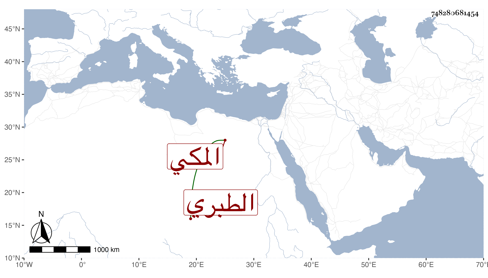

0902Sakhawi.DawLamic.ITO20230111-ara1.EIS1600.748280681454
Biography ID: 748280681454
257
محمد بن المحب محمد بن عبد الرحمن بن عثمان بن الصفي أحمد بن محمد بن إبراهيم الجمال أبو السعود الطبري المكي . ولد في شوال سنة إحدى وستين وسبعمائة وسمع من العز بن جماعة تساعياته ثم أسمعه أبوه بعد علي الجمال بن عبد المعطي والكمال بن حبيب وفاطمة ابنة أحمد بن قاسم الحرازي وجماعة ، وأجاز له ابن النجم وابن الجوخي والصفدي وست العرب والتاج السبكي وغيرهم ، وحدث وسمع منه التقي الفاسي وغيره ممن أخذت عنهم كالتقي بن فهد وترجماه وكان يؤم بمسجد التنضب بوادي نخلة ويخطب به ويتولى عقد الانكحة نيابة عن قضاء مكة بعد أبيه . ومات هناك في المحرم سنة خمس عشرة .
